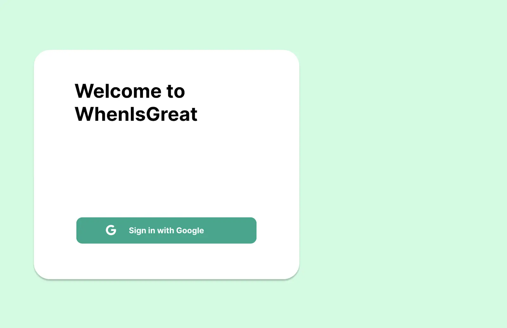
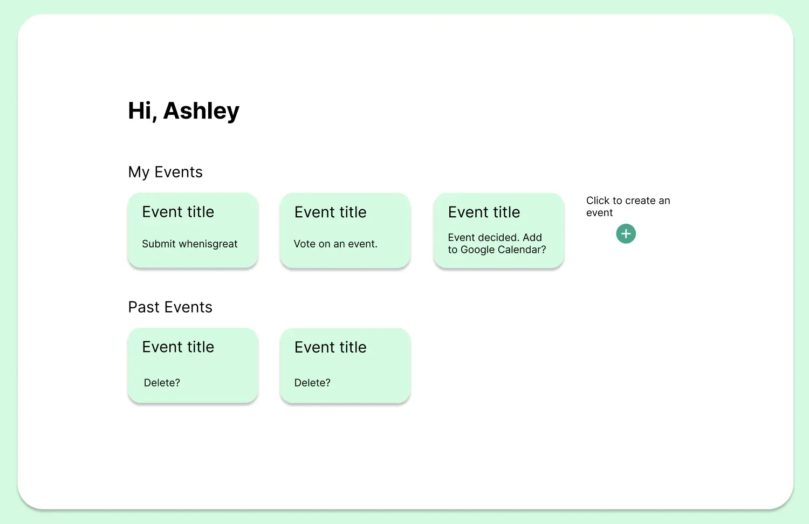
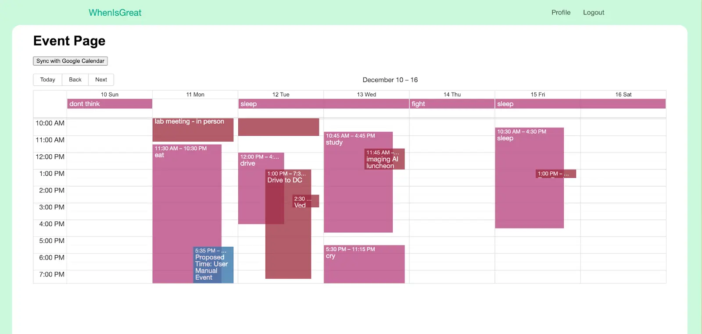
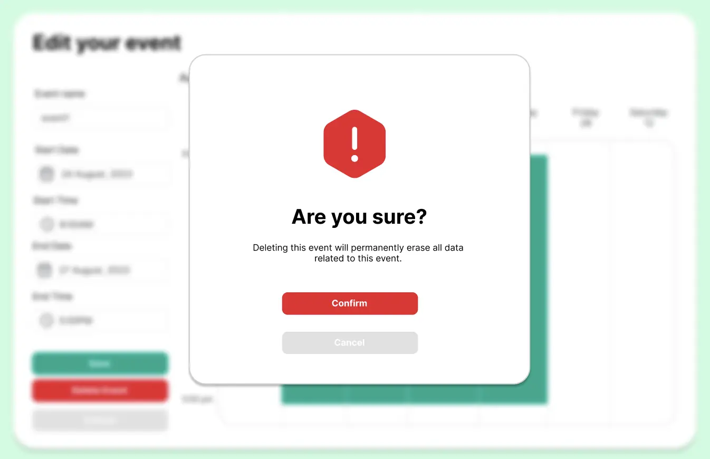
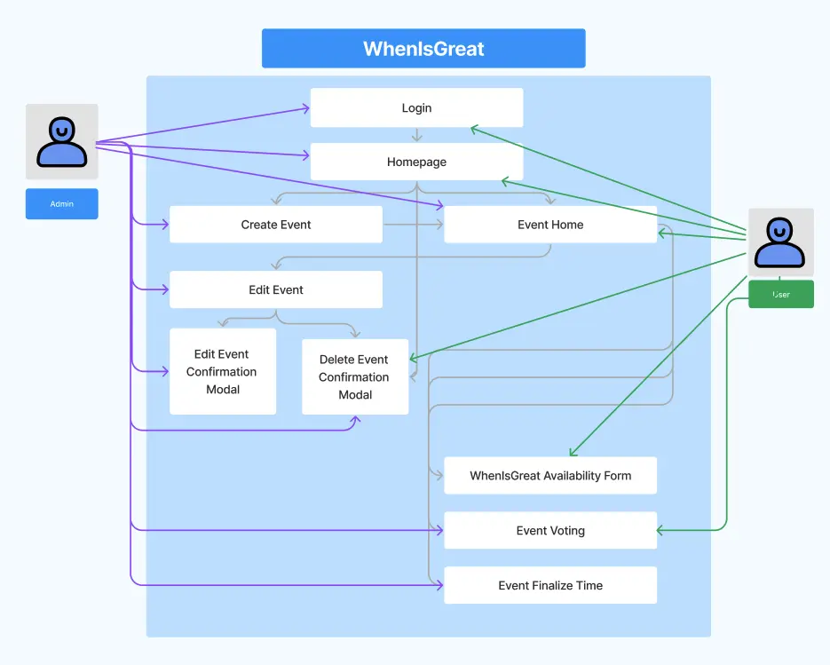
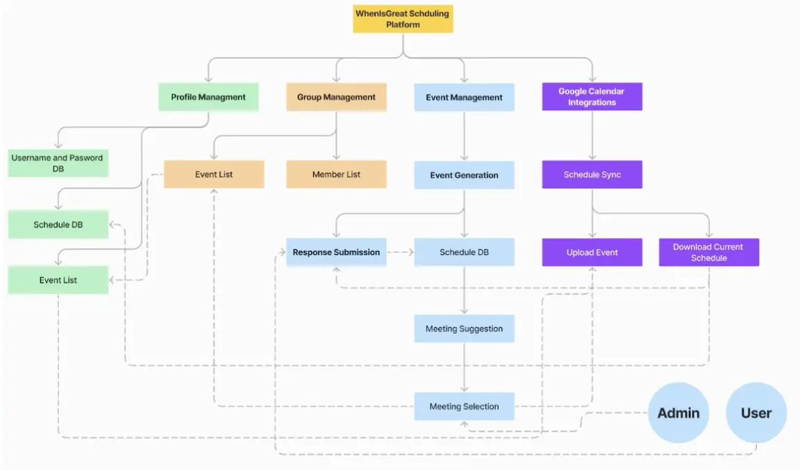
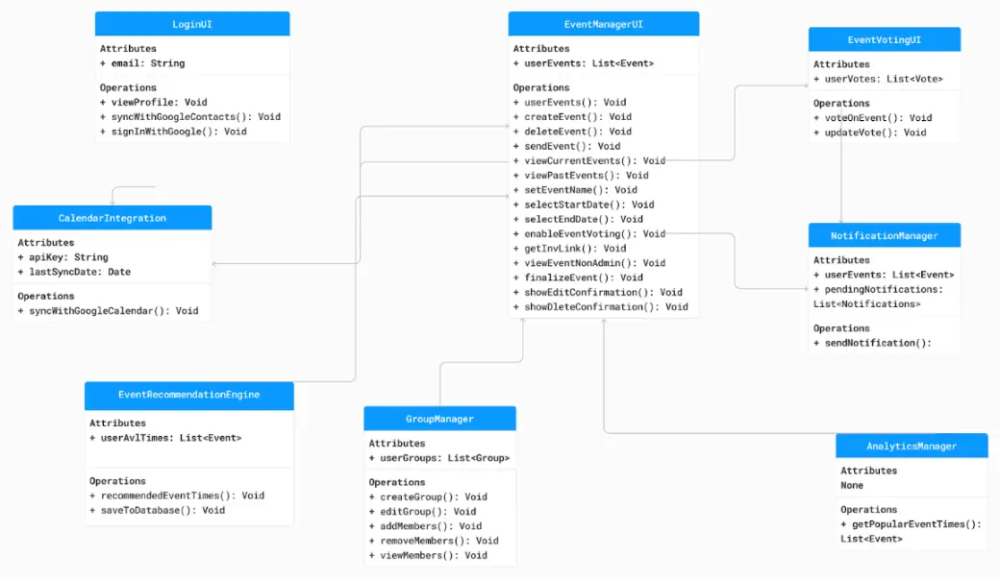
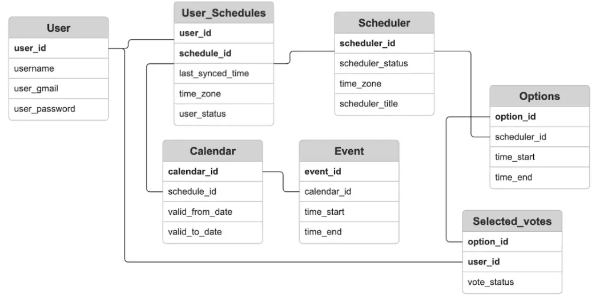

WhenIsGreat
Browser Application designed to streamline scheduling group meetings.
WhenIsGreat allows users to log in using their Google accounts, create an event, and share it with others via email or link. Members can sync their Google Calendars or manually input availability, which is then merged into a shared calendar view. The platform highlights availabilities, allowing users to vote on meeting times and finalize the best option. Once finalized, the system generates a Google Calendar event for members.

Responsibilities
Frontend / UI Developer
- Designed and implemented user interfaces using React.
- Ensured smooth interaction between UI components and backend APIs by connecting components.
- Handled data flow between frontend, backend, database, and Google Calendar services.
- Assisted with UI testing, bug fixes, and system integration.




Process
WhenIsGreat was a project developed through a full software engineering lifecycle. Our team began by identifying a common problem: scheduling group meetings. We then found common frustrations with existing scheduling tools such as lack of Google Calendar integration, poor visual design, and limited functionality for students. We designed a solution, outlining our Software Requirements Specification (SRS) and creating UI mockups. This included functions such as OAuth login, calendar syncing, availability visualization, and event voting.
Across three sprints, we followed an iterative development process. We began with core features such as account login, event creation, and calendar syncing. As the frontend developer, I implemented the user interface using React. I focused on creating an intuitive layout with reusable components for event creation, calendar views, and voting.
One challenge that we faced was integrating Google OAuth and Google Calendar APIs. Continuous synchronization proved to be complex, and introduced security risks. We decided to pivot to a manual "Sync with Google Calendar" button to allow users to control when their data was shared, while still providing the core functionality of our platform. This additionally reduced API calls and simplified debugging.
Ultimately, this project strengthened my experience in building scalable frontends that communicate with secured APIs, designing responsive layouts, and collaborating across frontend-backend.


